Chapitre 1 : Analyse de données
Économétrie (ECON0212)
Natalia Bermúdez
HEC Liège
September 2026
Utiliser des données
- Les
donnéessont centrales en économétrie.

Selon un article du New York Times de 2014, “les data scientists […] passent de 50 % à 80 % de leur temps plongés dans ce travail plus prosaïque de collecte et de préparation de données numériques rebelles, avant de pouvoir les explorer”
Aujourd’hui : les basiques de l’analyse de données (préparation, visualisation et statistiques descriptives)
Au menu de cette séance
- Stata 101
- Nettoyer les données
- Transformations avancées (agrégations, combinaisons…)
- Visualisation
- Statistiques descriptives
Au menu de cette séance
- Stata 101
- Nettoyer les données
- Transformations avancées (agrégations, combinaisons…)
- Visualisation
- Statistiques descriptives
Installation de Stata
Cf. guide sur lola
1. Téléchargement depuis DOX (version stata StataNow/SE)
- Mot de passe = stata19hec
- Version Windows : https://dox.uliege.be/index.php/s/dXvpvWNjR7KXSkX
- Version Mac : https://dox.uliege.be/index.php/s/Qrg86PtLILkOdeI
2. Installation
- Lancer l’installateur et choisir la version StataNow/SE.
- Ensuite encoder les credentials ci-dessous:
- Auhorization: rnje
- Code: 0n0b koke $m7k xamu 26b7 v9fm hd83 zm7t cq4y t
- Serial number: 401909325829
Interface utilisateur de Stata
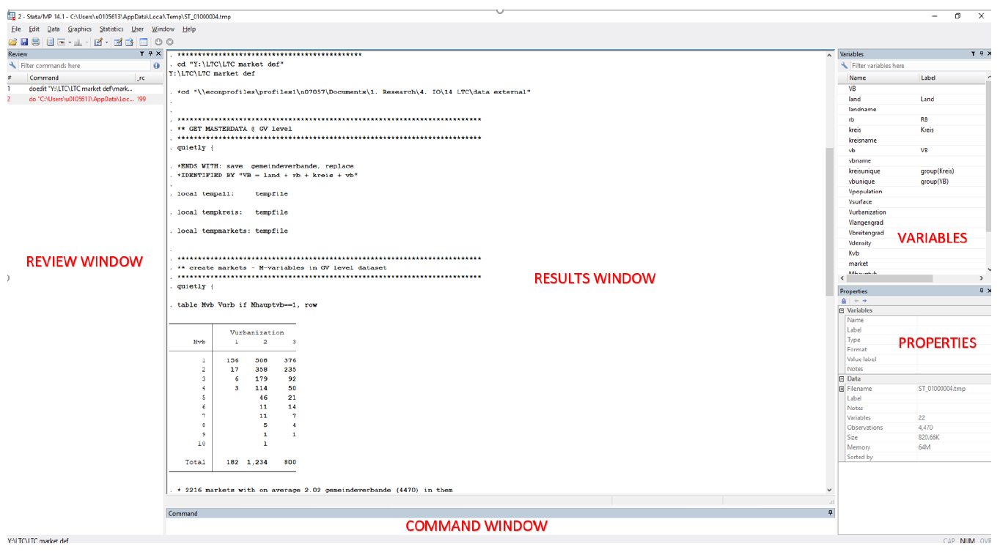
Glossaire
Stata: le nom du logiciel qu’on va utiliser pendant tout le cours pour analyser des données
- Une commande : une instruction écrite que vous donnez à
Stata, et que le logiciel comprend et exécute (-> ouvrir une base de données, créer une variable, calculer une moyenne…)- ⚠️ Une seule commande par ligne
- Un dofile : un fichier texte (extension
.do) qui contient une suite de commandes, écrites les unes en dessous des autres- Chaque commande doit être séparée par une nouvelle ligne
- Stata lit et exécute les commandes dans l’ordre où elles apparaissent, de haut en bas
- Ouvrir un dofile :
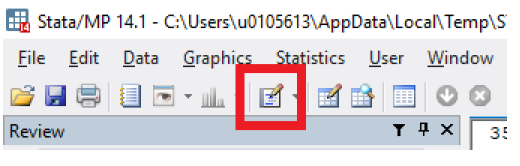
- Pour lancer une commande écrite dans un dofile :
- Sélectionner la ou les lignes à exécuter
- Taper
Ctrl+D(Windows) ouCtrl+Maj+D(Mac), ou cliquer surDo
Exercice 1
Créer un nouveau dofile (File → New → Do-file). Sauvegarder quelque part sous le nom
1-analyse-de-donnees.Écrire le code suivant dans le dofile et compiler (
Ctrl+DouCtrl+Maj+D). (Vous pouvez surligner le code à compiler, ou compiler sur tout le dofile)
Bravo ! Vous avez créé votre première variable !
- Créer une nouvelle variable
yégale à \(x^2\).
Trouver de l’aide
Directement dans
Stata:Limite : il faut connaître le nom de la
commande. Par exemple :
Sur internet :
- Parfois plus efficace
- Il vaut mieux faire une recherche en anglais pour avoir plus de réponses
- Renvoie souvent sur la documentation officielle
Intelligence artificielle (ChatGPT, Claude, Prodigy…) :
- Potentiellement encore plus efficace !
- Surtout utile quand on a déjà une idée de ce qu’on fait
- Exemple d’utilisation
- Potentiellement encore plus efficace !
Collaborer !
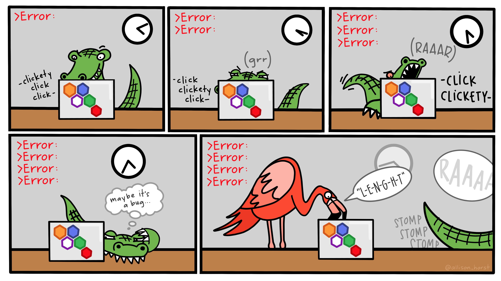
Quand ça tourne mal
Importer des données
stata peut importer des données depuis différents formats :
Format stata : extension
.dtaFormat Excel : extension
.xlsou.xlsx- Attention au format du fichier excel : une ligne est une observation, une colonne une variable
Format csv : extension
.csv- Chaque élément est séparé de l’ensemble des données par un
delimiterqui peut être : une tabulation, une virgule, un point-virgule…
- Chaque élément est séparé de l’ensemble des données par un
Importer des données : chemin absolu ou relatif ?
1️⃣ Chemin absolu = l’adresse complète du fichier
On indique à Stata exactement où se trouve le fichier sur l’ordinateur.
Le chemin commence depuis la racine de l’ordinateur.
⚠️ Attention : utilisez / dans les chemins. Cela fonctionne sous Windows, macOS et Linux.
2️⃣ Chemin relatif = l’adresse à partir du dossier de travail
Stata part du répertoire de travail courant (cd).
Inspecter des données
Une fois l’ensemble de données chargé, vous pouvez commencer à l’explorer :
browse: Ouvre les données dans la fenêtre d’exploration.describe: Affiche la liste des variables, leur type et leur étiquette.codebook: Fournit des informations détaillées sur les variables : type, valeurs manquantes, valeurs uniques, étendue, etc.sum nom_de_la_variable: Donne le nombre d’observations, la moyenne, l’écart-type, le minimum et le maximum.sum nom_de_la_variable, detail: Fournit des statistiques descriptives plus détaillées, notamment les percentiles, la médiane, l’asymétrie et l’aplatissement.tab nom_de_la_variable: Produit un tableau de fréquences indiquant le nombre d’observations pour chaque valeur de la variable.
Exercice 2
Importez la base
gapminder.dtaen format dta (disponible sur lola).- Cette base contient des données sur l’espérance de vie et le PIB par habitant de nombreux pays.
Quelles variables contiennent les données ? Vous pouvez utiliser
codebookoudescribe.Inspectez visuellement les données. Plusieurs solutions pour ouvrir la base de données grâce à
browse:- Naviguer dans le menu :
Data, Data Editor - Bouton
browse - Commande :
browse [varlist] [if]dans la fenêtre de commande ou un dofile
À quoi correspond la variable
pop?- Naviguer dans le menu :
Types de variables
- Numérique (
float,int) :- Exemple : âge →
int; revenu →float
- Exemple : âge →
- Texte (
string) :- Exemple : pays, nom →
string
- Exemple : pays, nom →
- Catégorielle :
- Exemple : genre
- Une variable numérique avec un label pour chaque valeur
1="female";2="male"
Modifier le type de la variable
texte → numérique
numérique → texte
texte → catégoriel
Modifier des données existantes (variables)
Supprimer une variable (ou une liste de variables)
Sélectionner une variable (ou une liste de variables) [ce qui supprime les autres]
Renommer une variable :
Créer un label :
Créer des variables
On génère une nouvelle variable en lui donnant un nom et en définissant ses valeurs dans une EXPRESSION
Une EXPRESSION peut être :
Mathématique, par exemple :
Du texte (
stringenstata), par exemple :
Une fonction de variables existantes :
Modifier la valeur d’une variable
On peut remplacer la valeur d’une variable (très similaire à
gen)Une fonction de variables existantes :
Remplacement conditionnel :
Expressions logiques
- Expressions qui peuvent être utilisées pour préciser la condition :
==: égal à!=: non égal à<=: inférieur ou égal à>=: supérieur ou égal à<: strictement inférieur à>: strictement supérieur à
- Pour combiner ces conditions, on utilise
&ou|:&= et : si les 2 conditions doivent être vérifiées toutes les deux|= ou : si une des conditions seulement doit être vérifiée
Sélection d’observations
Garder ou supprimer les observations sous certaines conditions
Par exemple :
⚠️ Comme c’est le cas dans de nombreux logiciels, l’expression logique s’écrit ==
Exercice 3
Combien d’observations y a-t-il dans la base de données ouverte précédemment (
gapminder) ?Combien de variables ? De quel type ?
Ne gardez que les observations correspondant au continent
Asia.Chargez à nouveau la base, puis créez la variable
gdppercapégale au PIB par habitant grâce au code suivant :
Félicitations, vous avez créé votre première variable ! Utilisez la commande browse pour la voir dans la base.
Syntaxe de stata
La plupart des commandes ont la syntaxe suivante :
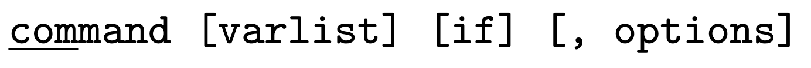
où [..] correspond à des options. Exemples :
summarizeou justesum— statistiques descriptives pour toutes les variablessummarize gdp— statistiques descriptives pour legdpuniquementsummarize gdp if year == 1960— statistiques descriptives pour legdpen 1960
Au menu de cette séance
- Stata 101
- Nettoyer les données
- Transformations avancées (agrégations, combinaisons…)
- Visualisation
- Statistiques descriptives
Valeurs manquantes
Quand une valeur est manquante, elle est indiquée
.pour une variable numérique""pour une variable string
Dans les calculs, une valeur manquante produit généralement une valeur manquante :
Stataassigne la valeur \(+\infty\) à une manquante :
Attention à la propagation des valeurs manquantes ! :
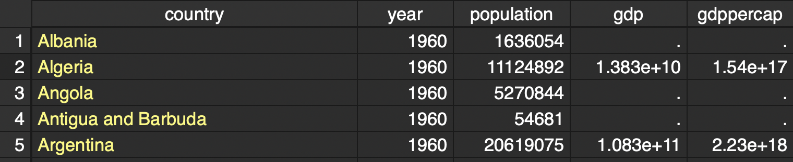
Au menu de cette séance
- Stata 101
- Nettoyer les données
- Transformations avancées (agrégations, combinaisons…)
- Visualisation
- Statistiques descriptives
Agrégation des données collapse
La commande collapse transforme la base de données en mémoire en statistiques essentielles sur celle-ci (sum=> somme ; mean=>moyenne ; sd=>écart-type ; median=>médiane).
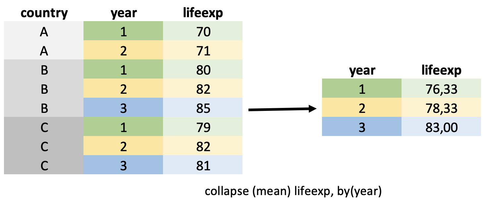
- Attention,
collapseremplace les données en mémoire
Combiner des bases de données : append
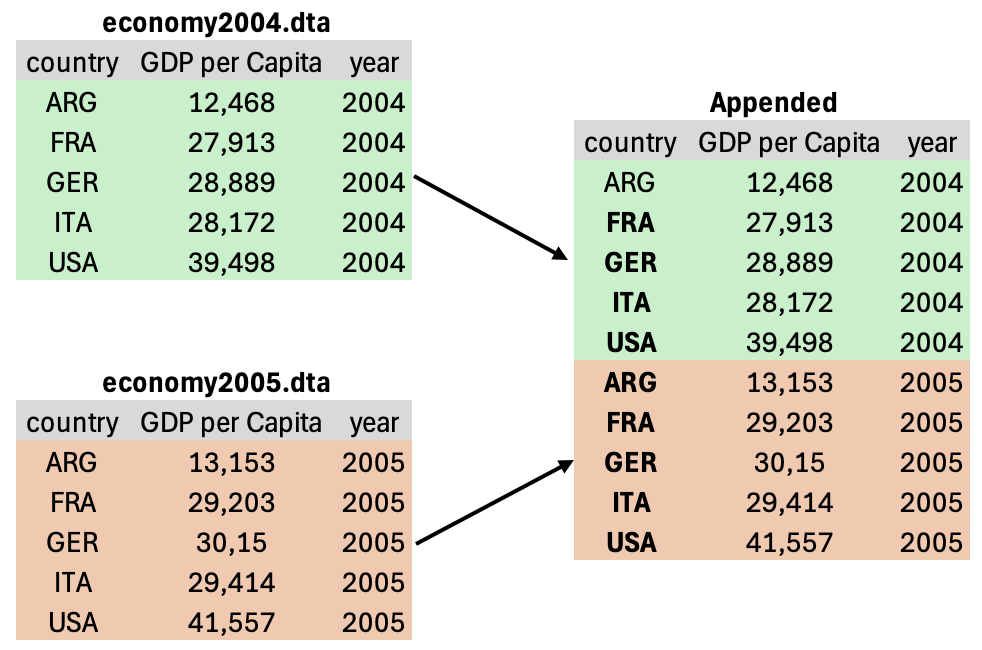
Combiner des bases de données : merge
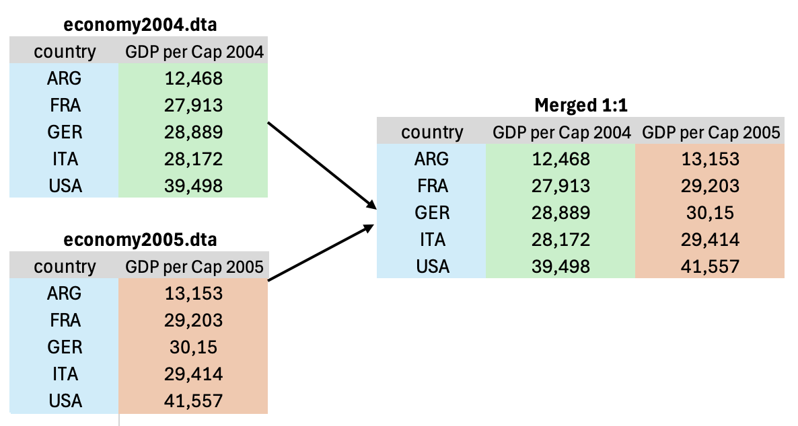
Formats wide et long : reshape
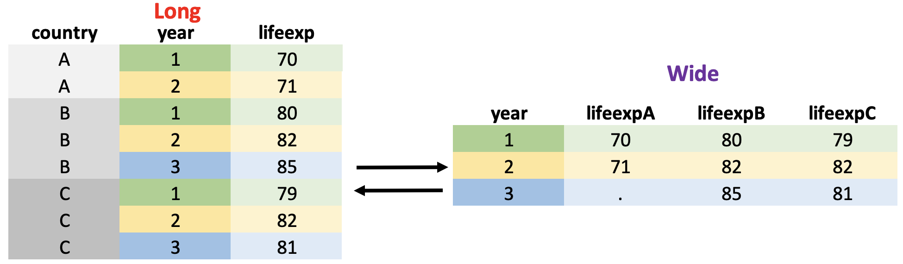
Exercice 4 : Nettoyage des données
On utilise la base gapminder précédemment importée.
Quelles années ont des valeurs manquantes pour le PIB ?
Quel pays a l’espérance de vie la plus élevée pour une population de plus d’un milliard en 2007 ?
Quelle est la moyenne de l’espérance de vie par continent et par an ? (Vous pouvez utiliser la fonction
collapse)
Syntaxe de collapse : collapse (mean) VAR1 VAR2 VAR3, by(VAR_CATEGORIELLE)
Au menu de cette séance
- Stata 101
- Nettoyer les données
- Transformations avancées (agrégations, combinaisons…)
- Visualisation
- Statistiques descriptives
Visualiser des données
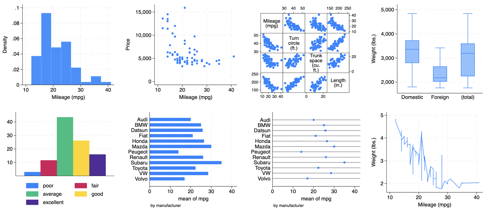
Comment choisir la représentation graphique adaptée ?
Ça dépend des variables étudiées, et notamment :
- 1, 2 (ou 3) variables
- Continue ou discrète
Visualiser des données — 1 variable
Variable continue
Visualiser des données — 1 variable
Discrète
- Diagramme en bâton (bar chart) :
Si la variable discrète est numérique :
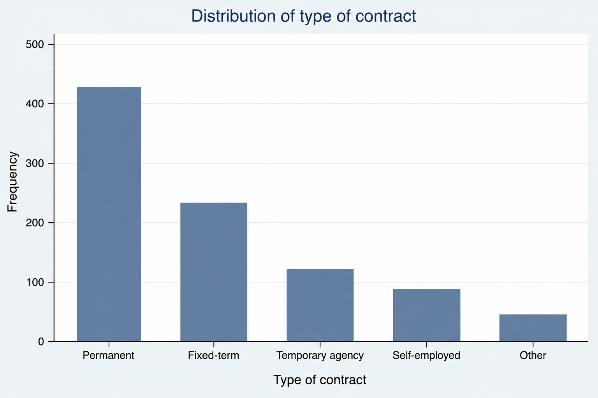
Visualiser des données — 2 variables
Une base de données “propre”
- Chaque colonne correspond à une variable
- Chaque ligne correspond à une observation
Avant de procéder à la visualisation, il faut se demander :
- Quelle information veux-je représenter ?
- Faire en particulier attention à la présence de potentielles variables manquantes
- Est-ce que les données contiennent cette information telle qu’une colonne/ligne correspond à ce que je veux représenter ?
- Éventuellement utiliser
collapseet/oureshapepour transformer les données
- Éventuellement utiliser
Types de visualisation
Quelques exemples des types de graphiques les plus utilisés :
- Commande
twoway+ type de graphique
| Type | Fonction |
|---|---|
| Point | scatter |
| Line | line, connected |
| Histogram | histogram |
| Density | kdensity |
- Commande
graph+ type de graphique
| Type | Fonction |
|---|---|
| Bar | bar |
| Boxplot | box |
Exercice 6 : Premiers graphiques
On utilise les données gapminder.
L’histogramme des espérances de vie en 2007. Ensuite, précisez la couleur en ajoutant l’option
color(green)(il faut mettre les options après une virgule).Un scatter plot du taux de fertilité (axe y) vs. PIB par habitant (axe x) en 2007. Ensuite, spécifiez les titres des axes.
[CHALLENGE] Représentez l’évolution de l’espérance de vie au cours du temps par continent.
- Il va falloir agréger les données au niveau continent × year → vous pouvez faire cela avec une commande
collapse - Il est ensuite plus simple de changer la forme des données pour les transformer de “long” en “wide” en utilisant un
reshape
- Il va falloir agréger les données au niveau continent × year → vous pouvez faire cela avec une commande
Au menu de cette séance
- Stata 101
- Nettoyer les données
- Transformations avancées (agrégations, combinaisons…)
- Visualisation
- Statistiques descriptives
Synthétiser les données
- En général, on apprend à connaître ses données par des visualisations + calculs de statistiques descriptives
- C’est l’heure des statistiques descriptives !
- Utilisées pour décrire les données et simplifier l’information à partir de différentes mesures, tableaux et graphiques
- (VS. statistiques inférentielles qui permettent ensuite de généraliser les résultats à la population d’intérêt.)
- En particulier, nous nous intéressons aux tendances centrales et à la dispersion.
Tendances centrales
mean(x) : la moyenne de toutes les valeurs de x.
\[\bar{x} = \frac{1}{N}\sum_{i=1}^N x_i\]
Dispersion
Une autre caractéristique intéressante est la mesure de l’écart d’une variable par rapport à son centre (la moyenne dans ce cas).
La variance est l’une de ces mesures (l’écart interquartile en est une autre).
\[Var(X) = \frac{1}{N} \sum_{i=1}^N(x_i-\bar{x})^2\]
Soit deux distributions normales ayant une moyenne égale à 0 :
Statistiques descriptives : les commandes stata
Variables numériques
La commande summarize (sum) permet d’afficher des statistiques de base sur une ou plusieurs variables numériques de la base de données :
- la moyenne, l’écart-type et les valeurs extrêmes (min et max)
- L’option
detailpermet d’afficher des statistiques plus précises sur la distribution de la ou des variables : médiane et autres centiles.
Statistiques descriptives : les commandes stata
Variable discrète
tabulate (tab) permet d’afficher les tableaux de fréquences (i.e., la distribution) des variables numériques catégorielles ou des variables textuelles :
Statistiques croisées
Deux variables catégorielles
Dans le cas où il y a 2 variables spécifiées, table produit une table de contingence :
Deux variables : catégorielle vs. quantitative
Covariance
La covariance est une mesure de la variabilité jointe de deux variables.
\[Cov(x,y) = \frac{1}{N} \sum_{i=1}^N(x_i-\bar{x})(y_i-\bar{y})\]
- Difficile à interpréter car sensible à la dispersion des variables par rapport à la moyenne.
Corrélation
La corrélation est une mesure de la force de l’association linéaire entre deux variables.
\[Cor(x,y) = \frac{Cov(x,y)}{\sqrt{Var(x)}\sqrt{Var(y)}}\]
Corrélation
- La corrélation est toujours entre -1 et 1 !
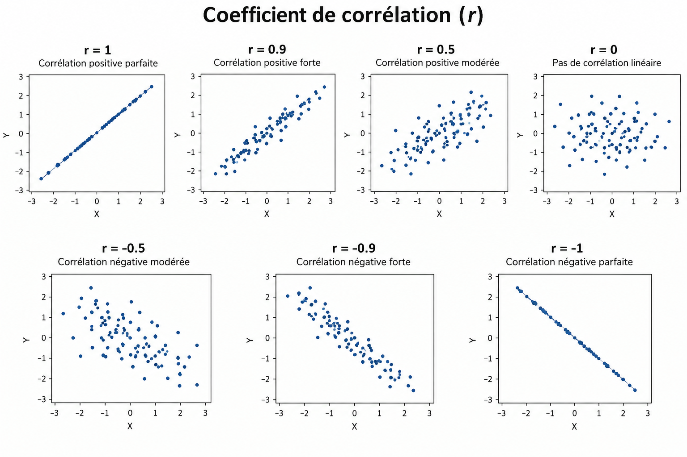
Un autre source : mathisfun
Exercice 7 : statistiques descriptives
- Quelle est la moyenne du PIB en 2011 ?
- La médiane ?
- Calculez la moyenne de l’espérance de vie par année.
- Calculez la corrélation entre la fertilité et la mortalité infantile en 2015.
[À retenir] Utiliser des do files
Dofile = un script contenant une suite de commandes stata
- Commande vs. script
- Ligne de commande : pratique pour tester
- Script de commandes (=
dofile) :- permet à l’analyse d’être reproductible
- Commenter ses dofiles :
//
- Organiser son travail en plusieurs dofiles
- ayant une suite logique :
- créer la base de données → statistiques descriptives → analyse graphique
- ayant des noms significatifs :
1-construction-data.do→2-stat-des.do→3-graph.do
- ayant une suite logique :
[À retenir] Commandes principales en stata
| Tâches | Commandes |
|---|---|
| Obtenir de l’aide | help, findit, lookfor |
| Utiliser les données Stata | use, save, append, merge |
| Data management | reshape, collapse |
| Gérer variables | replace, rename, encode, sort, keep, drop |
| Gérer observations | keep if, drop if |
| Créer/modifier des variables | generate, replace, egen |
| Visualiser les données | describe, list, tabulate, summarize |
| Calculatrice | display |
Question de compréhension [Groupe de 2]
Choisissez un graphique issu d’un média grand public (article, journal, site internet, rapport) qui concerne une statistique ou une donnée économique. Précisez les éléments suivants :
- La source et le contexte du graphique.
- Une description de ce que représente ce graphique.
- Ce que vous trouvez pertinent ou problématique dans ce graphique.
- Comment ce graphique peut être interprété ou discuté du point de vue de l’analyse économique et statistique.
- Suggérez une analyse statistique complémentaire
Où en sommes-nous de notre quête de la causalité
✅ Comment gérer les données ? Regardez-les, ordonnez-les, visualisez-les…
❌ Comment résumer une relation entre plusieurs variables ?
❌ Qu’est-ce que la causalité ?
❌ Comment faire si nous n’observons qu’une partie de la population ?
❌ Nos résultats sont-ils uniquement dus au hasard ?
❌ Comment trouver de l’exogénéité en pratique ?
À la semaine prochaine !
Contact
natalia.bermudez@uclouvain.com
Merci à Florian Oswald et à toute l’équipe de ScPoEconometrics pour le livre et leurs ressources, ainsi qu’à Malka Guillot pour la version originale de ce cours.

Comment \(x\) et \(y\) sont associées ? Covariance et corrélation
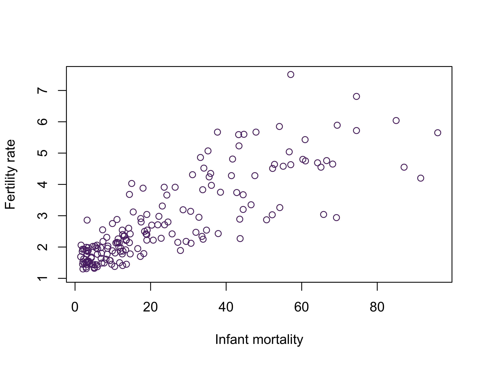
On s’intéresse principalement à 2 statistiques pour caractériser la relation entre \(x\) et \(y\) :